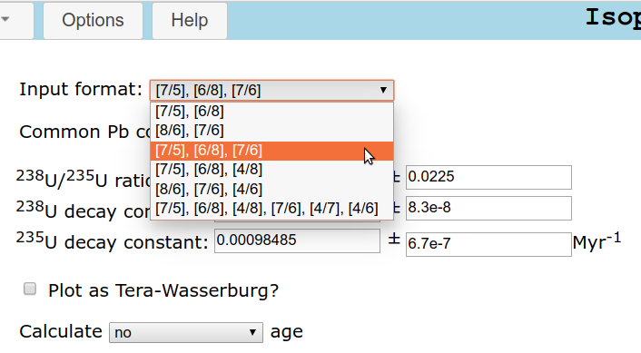

IsoplotR: a free and open toolbox for geochronology
Abstract
This paper reviews the basic principles of radiometric geochronology as implemented in a new software package called IsoplotR, which was designed to be free, flexible and future-proof. IsoplotR is free because it is written in non-proprietary languages (R, Javascript and HTML) and is released under the GPL license. The program is flexible because its graphical user interface (GUI) is separated from the command line functionality, and because its code is completely open for inspection and modification. To increase future-proofness, the software is built on free and platform-independent foundations that adhere to international standards, have existed for several decades, and continue to grow in popularity. IsoplotR currently includes functions for U-Pb, Pb-Pb, 40Ar/39Ar, Rb-Sr, Sm-Nd, Lu-Hf, Re-Os, U-Th-He, fission track and U-series disequilibrium dating. It implements isochron regression in two and three dimensions, visualises multi-aliquot datasets as cumulative age distributions, kernel density estimates and radial plots, and calculates weighted mean ages using a modified Chauvenet outlier detection criterion that accounts for the analytical uncertainties in heteroscedastic datasets. Overdispersion of geochronological data with respect to these analytical uncertainties can be attributed to either a proportional underestimation of the analytical uncertainties, or to an additive geological scatter term. IsoplotR keeps track of error correlations of the isotopic ratio measurements within aliquots of the same samples. It uses a statistical framework that will allow it to handle error correlations between aliquots in the future. Other ongoing developments include the implementation of alternative user interfaces and the integration of IsoplotR with other data reduction software.
1 Introduction
Geology is, in essence, a historical science in which timing is of the utmost importance. Geochronology underpins
the study of Earth history and puts fundamental constraints on the rate of biological evolution (Chen and
Benton, 2012; Gradstein et al., 2012). Technological advances in mass spectrometry, such as the widespread
availability of multi-collector instruments, are ever increasing the precision of the isotopic data that form the basis
of the chronostratigraphic timescale. A plethora of mathematical-statistical techniques are available to extract
chronological constraints from these isotopic measurements. Examples of this include isochrons, concordia diagrams,
age spectra and density estimates. Implementing these methods in a rigorous and self-consistent manner requires
appropriate software. For many years, a Microsoft Excel add-in called Isoplot has served this purpose extremely
well.
Developed by Kenneth R. Ludwig over a period of two decades, Isoplot is a user-friendly toolbox
that allows geologists to calculate and visualise geochronological data within a familiar spreadsheet
environment (Ludwig, 1988, 1999, 2003a, 2012). Few computer programs have been as widely used in the
Earth Sciences as Isoplot. Written in Visual Basic for Applications (VBA), Isoplot takes isotopic data
as input and produces publication-ready figures as output. Unfortunately, recent versions of Excel
are incompatible with Isoplot, whose creator has retired and no longer maintains the code. These
software issues are a major problem for the field of radiometric geochronology, to the point where some
laboratories keep an old Windows XP computer with Excel 2003 around for the sole purpose of running
Isoplot.
This paper introduces a new computer code called IsoplotR as a free, open and more future-proof alternative
for Isoplot. The principal aim of this paper is to provide a general overview of the design philosophy and basic
operating principles behind the software, rather than a detailed manual of all its components. Section 2 discusses
the software architecture, which uses a modular design with future-proofness and extendability in mind. Section 3
presents three fundamental types of input format that are used by IsoplotR to capture the covariance structure of
isotopic ratio data. We will see that this covariance structure plays a fundamental role in all of IsoplotR’s
methods.
Section 4 reviews the important subject of linear regression, which underpins the construction of isochrons.
IsoplotR currently implements three different types of error weighted linear regression algorithms that account for
error correlations between variables and between aliquots in two or three dimensions. Section 5 explains how these
three methods represent different approaches of dealing with overdispersion. Section 6 introduces a weighted mean
plot to visualise multiple age estimates and proposes a heuristic method to detect outliers. Section 7
presents three approaches to construct confidence intervals for isochron ages, weighted means and
so forth. It introduces a profile log-likelihood method for the calculation of asymmetric confidence
intervals.
Section 8 discusses three further methods to visualise multi-aliquot collections of ages. Cumulative age
distributions (CADs) and kernel density estimates (KDEs) show the frequency distribution of the age measurements
but do not explicitly take into account the analytical uncertainties. The radial plot is introduced as a more
appropriate data visualisation tool for ‘heteroscedastic’ data (i.e. data with unequal measurements uncertainties).
The radial plot provides a good vehicle to assess the dispersion of multi-aliquot datasets. Overdispersed
datasets require further processing with continuous or discrete mixture models that are discussed in
Section 9.
Sections 10-15 provide specific details about the Rb-Sr, Sm-Nd, Lu-Hf, Re-Os, 40Ar/39Ar, U-Pb, Pb-Pb, U-Th-He, fission track and U-series dating methods. Section 16 introduces a selection of statistical methods to help interpret collections of multiple geochronological datasets that are useful in detrital geochronology. Finally, Section 17 sets out a roadmap for future developments to improve the accuracy and precision of geochronological data, and to provide closer integration of IsoplotR with earlier steps of the data processing chain.
2 Software architecture
There are three ways to use IsoplotR: online, offline and from the command line.
The online version can be accessed at http://isoplotr.london-geochron.com (see Appendix A), and is
convenient in several ways. First, it requires no software installation. Second, the IsoplotR website is perfectly
platform-independent. It renders on any modern HTML-5 compatible web browser, including those installed on
smartphones and tablet computers. Third, by using the online version, the user is guaranteed to have accessed the
most up-to-date version of the software.
An offline version of the GUI is provided for use on computers that are not (permanently) connected
to the internet. This is often the case for machines that are connected to mass spectrometers, as a
safety precaution. The offline version of the GUI works by emulating a web server within the default
browser on the user’s system. Installation instructions are provided on the IsoplotR website and on
GitHub.
The third way to access the full functionality of IsoplotR is through the command line within the R
programming environment (see Appendix B). The command line offers the greatest flexibility to automate, modify
and extend IsoplotR’s functionality.
The code base for the GUI and the core data processing algorithms are surgically separated. The command-line
functionality is grouped in a lightweight package called IsoplotR that may be installed from the ‘Comprehensive R
Archive Network’ (CRAN) by typing install.packages('IsoplotR') at the command prompt. Once installed, the
package can be loaded into memory by typing library(IsoplotR). The IsoplotR package has minimal
dependencies and should work on a basic R installation. In contrast, the GUI is written in HTML and Javascript and
interacts with IsoplotR via an interface package (Chang et al., 2017). It is provided in a second R package called
IsoplotRgui that is available from GitHub (see the IsoplotR website for details). IsoplotRgui is separate from
but depends on IsoplotR.
The clean separation between the two programs allows IsoplotR to remain light and easy to install. This is important for any future R packages that may wish to incorporate IsoplotR functions. A second reason for keeping the code base of the GUI and command line functionality separated is that other user interfaces are planned, for example within Excel (Section 17). Incorporating all these additional functions into a single package would add unnecessary bulk and redundancy. IsoplotR and IsoplotRgui are free and open software. The computer code for both programs is made available under the GPL license, which permits re-use and modification provided that any derived code is released under the same conditions (Free Software Foundation, 2007).
3 Input formats
In an abstract sense, IsoplotR is a set of functions F that take some isotopic data A as input and generate some numerical and/or graphical output B:
|
| (1) |
For example, A could be some 40Ar/36Ar- and 39Ar/36Ar-measurements and B could be the 40Ar/39Ar-age. Or
A could be some 87Sr/86Sr- and 87Rb/86Sr-measurements and B a vector with the slope and intercept of an
isochron fit to these data. A may also include decay constants, stable isotope ratios and other parameters that are
associated with analytical uncertainty.
Regardless of the application, the error propagation of B is as important as estimation of B itself (Ludwig, 2003a). Without analytical uncertainties, it is impossible to ascertain whether the difference between two geochronological dates is real, or simply an artifact of analytical imprecision. IsoplotR propagates the analytical uncertainty of B using one of two methods. If F is a likelihood function, then the error propagation is done by inverting the (negative) matrix of its second derivatives. In all other cases, the error propagation uses a first order Taylor approximation:
|
| (2) |
where ΣA is the covariance matrix of the input data A, ΣB is the covariance matrix of the estimated parameters B,
JF is the Jacobian matrix with the partial derivatives of the function F with respect to the measurements A, and
JFT is the transpose of the Jacobian matrix. If A is a vector of n measurements and B is a vector of m estimated
parameters, then ΣA and ΣB are n × n and m × m matrices with the variances of the As and Bs on
the diagonal and their covariances on the off-diagonal terms; and JF is an n × m matrix of partial
derivatives.
In order to use Equations 1 and 2, IsoplotR requires not only the isotopic measurements and their
analytical uncertainties, but also the covariances between these quantities. For example, in the case of the
aformentioned 40Ar/39Ar example, we require the isotopic ratio measurements 40Ar∕36Ar and 39Ar∕36Ar,
their standard errors s[40Ar∕36Ar] and s[39Ar∕36Ar], and their covariance cov[40Ar∕36Ar,39Ar∕36Ar].
Similarly, for the Rb-Sr example, we require 87Rb∕86Sr, s[87Rb∕86Sr], 87Sr∕86Sr, s[87Sr∕86Sr] and
cov[87Rb∕86Sr,87Sr∕86Sr].
It is generally quite straightforward to obtain the isotopic ratio estimates and their uncertainties using most data acquisition software. Unfortunately this is not always the case for the covariance terms. IsoplotR includes three kinds of input format to overcome this problem. A first class of input formats consists of a flat table with five or nine columns:
or
where X, Y and Z are the isotopic (ratio) measurements, s[X], s[Y ] and s[Z] are their analytical uncertainties
(standard errors); and ρ[X,Y ], ρ[X,Z] and ρ[Y,Z] are the error correlations, which are related to the covariances as
follows:
|
|
The remaining two classes of input formats specify the covariance structure of the data without requiring any actual covariances or correlation coefficients. For synchronously acquired isotopic data, such as 40Ar/39Ar-data measured by noble gas mass spectrometry or U-Pb data measured by laser ablation inductively coupled mass spectrometry (LAICPMS), this is achieved using redundant ratios. For example, in the case of 40Ar/39Ar-data, let X, Y and Z be three ratios of 36,39,40Ar:
and let s[X], s[Y ] and s[Z] be their standard errors. Then first order Taylor expansion yields:
|
|
from which the covariance between X and Y can be inferred as
|
|
It is important to note that this approach makes the crucial assumption that all three standard errors (s[X], s[Y ]
and s[Z]) are based on the same number of data points. If some data has been rejected from one ratio but not
another, then this relation will not work.
Finally, for isotopic data that are analysed asynchronously, such as Rb-Sr or Sm-Nd measurements involving liquid chromatography, the covariance can be obtained from the parent and daughter element concentrations and the daughter isotopic ratio. For example, in the case of Rb-Sr data, if the following data are given:
then the 87Rb/86Sr-ratio is given by:
|
| (3) |
where (84Sr∕87Sr), (88Sr∕87Sr) and (85Rb∕87Rb) are constant, non-radiogenic isotope ratios, and M(Rb) and M(Sr) are the molar masses of Rb and Sr, respectively. Because Z appears in Equation 3, the covariance (cov[W,Z]) between (87Rb∕86Sr) and (87Sr∕86Sr) is nonzero and can be estimated using Equation 2.
4 Regression
Isochrons are an important instrument of high precision, high accuracy geochronology. Given several aliquots from a
single sample, they allow the non-radiogenic component of the daughter nuclide to be quantified and separated from
the radiogenic component. In its simplest form, an isochron is obtained by setting out the amount of radiogenic
daughter against the amount of radioactive parent, both normalised to a non-radiogenic isotope of the daughter
element, and fitting a straight line through these points by least squares regression (Nicolaysen, 1961). The slope
and intercept then yield the radiogenic daughter-parent ratio and the non-radiogenic daughter composition,
respectively.
There are several ways to fit an isochron. The easiest of these is ordinary least squares regression, which weights
all data points equally. In the presence of quantifiable analytical uncertainty, it is equally straightforward to use the
inverse of the y-errors as weights. It is significantly more difficult to take into account uncertainties in both the
x- and y-variable. The York (1966) method assumes that the analytical uncertainties of the x- and
y-variables are independent of each other. IsoplotR uses this method to construct U-Th-He isochrons
(Section 14). But for other chronometers, the assumption of uncorrelated uncertainties is generally not
valid.
York (1969) addresses this issue with a bivariate error weighted linear least squares algorithm that accounts for
covariant errors in both variables (Figure 1.a). This algorithm was further improved by York et al. (2004) to ensure
consistency with the maximum likelihood approach of Titterington and Halliday (1979). IsoplotR uses the York
et al. (2004) algorithm for its 40Ar/39Ar, Pb-Pb, Rb-Sr, Sm-Nd, Re-Os and Lu-Hf isochrons (Section 10). The
maximum likelihood algorithm of Titterington and Halliday (1979) was generalised from two to three dimensions by
Ludwig and Titterington (1994) for U-series disequilibrium dating. Also this algorithm is implemented in IsoplotR
(Section 13).
Finally, the 3-dimensional maximum likelihood approach of Ludwig and Titterington (1994) was further
modified by Ludwig (1998) to fit so-called ‘Total Pb-U isochrons’, which are constrained to a radiogenic
endmember composition that falls on the concordia line (Section 12). In its most sophisticated form,
this algorithm does not only allow for correlated errors between variables, but also between aliquots.
IsoplotR currently uses this algorithm to propagate decay constant uncertainties in the total Pb-U
isochron ages. Future versions of the program will generalise this approach to other chronometers as well
(Section 17).
The extent to which the observed scatter in the data can be explained by the analytical uncertainties can be assessed using a chi-square test. To this end, we define the chi-square statistic as:
|
| (4) |
where X are the data,  are the fitted values, and ΣX is the covariance matrix of X. For example, in the case of a
3-dimensional U-series isochron comprised of n aliquots, X is a [1 × 3n]-matrix obtained by concatenating all the
232Th/238U-, 234U/238U- and 230Th/238U-ratio measurements, and ΣX is the corresponding [3n× 3n] covariance
matrix.
are the fitted values, and ΣX is the covariance matrix of X. For example, in the case of a
3-dimensional U-series isochron comprised of n aliquots, X is a [1 × 3n]-matrix obtained by concatenating all the
232Th/238U-, 234U/238U- and 230Th/238U-ratio measurements, and ΣX is the corresponding [3n× 3n] covariance
matrix.
The p-value is defined as the probability of observing a value greater than χstat2 under a chi-square distribution
with df = (k−1)(n − 2) degrees of freedom, where k is the dimensionality of the linear fit. If the p-value falls
below a cutoff value of 0.05, say, then this indicates that the data are ‘overdispersed’ with respect
to the formal analytical uncertainties around the best-fit line. In contrast, p-values that are much
greater than 0.95 are indicative of ‘underdispersed’ data, possibly reflecting overestimated analytical
uncertainties.
An alternative way to assess the degree of over- or underdispersion is by dividing the chi-square statistic χstat2 by the number of degrees of freedom df. The resulting numerical value is called the ‘Mean Square of the Weighted Deviates’ (MSWD, McIntyre et al., 1966) by geochronologists, but is known as the ‘reduced chi-square statistic’ elsewhere. MSWD values that are far smaller or greater than 1 indicate under- or overdispersed measurements, respectively.
5 Dealing with overdispersion
Let us consider the simple case of a 2-dimensional dataset {x1,y1},…,{xi,yi},…,{xn,yn}. Data are overdispersed with respect to the analytical uncertainties if:
with
where i and ŷi are the fitted values, and
![[ 2 ]−1
Ωi ≡ s[xi] cov(xi,2yi)
cov(xi,yi) s[yi]](index15x.png)
IsoplotR provides three alternative strategies (‘models’) to deal with overdispersed data. A first way (‘model-1’) to account for overdispersion is to inflate all analytical uncertainties by a common factor f, which is chosen so as to reduce the MSWD to unity:
with
from which it is easy to show that f = .
A second option (‘model-2’) for dealing with overdispersion is to simply ignore the analytical uncertainties and
perform an ordinary least squares regression. This option is offered for the sake of completeness but is inherently
flawed, because (1) its results may differ depending on which ratio is chosen as the dependent variable; (2) it
assumes that only the dependent variable is subject to scatter; which results in (3) unreliable error calculations
(Ludwig, 2003b, p. 648).
Finally, a third option (‘model-3’) is to attribute the overdispersion to geological scatter in the ages or in the non-radiogenic isotope composition. The latter hypothesis can be formalised as follows:

with
where ω is the overdispersion term, which can be found iteratively. This term has geological significance and is
reported separately by IsoplotR. The third strategy is arguably the most sensible one, because geological scatter is
a very common phenomenon. For example, not all aliquots in a multi-mineral Rb-Sr isochron may
have formed with exactly the same initial 87Sr/86Sr ratio (McIntyre et al., 1966). As the analytical
precision of mass spectrometers has increased over the years, geochronologists’ ability to detect even
the smallest amount of geological dispersion has steadily grown as well. It is reasonable to assume
that this trend will continue into the future, and that overdispersed datasets will become ever more
common.
It is important to note that the overdispersion of geochronological datasets contains meaningful geological information. For example, the dispersion of igneous zircon U-Pb dates bears information on the magmatic residence time of these crystals (Matzel et al., 2006; Rioux et al., 2012). Thus, the increasing prevalence of overdispersed datasets should be seen as a positive trend rather than a nuisance.
6 Weighted means
Let t = {t1,...,tn} be a set of n age estimates determined on different aliquots of the same sample, and let {s[t1],...,s[tn]} be their respective analytical uncertainties. IsoplotR calculates the weighted mean of these data assuming a Normal distribution with two sources of variance:
|
| (5) |
where p(a|b,c) stands for “the probability of observing a given b and c”, μ is the mean, σ2 is the total variance and
ω is the overdispersion. The latter parameter is equivalent to its namesake from Section 5. Equation 5 can be
solved for μ and ω by the method of maximum likelihood, yielding two estimates  and
and  and their approximate
covariance matrix. Substituting X for t and
and their approximate
covariance matrix. Substituting X for t and  for in Equation 4 and dividing by df = n− 2 degrees of freedom
yields the MSWD value for age homogeneity.
for in Equation 4 and dividing by df = n− 2 degrees of freedom
yields the MSWD value for age homogeneity.
With regards to error propagation, it is important to make a distinction between random and systematic sources
of uncertainty (Horstwood et al., 2016). Random uncertainties can be reduced to arbitrarily low levels by averaging
an arbitrarily large number of aliquots. In contrast, systematic uncertainties impose absolute limits on the
precision of geochronological dates. For example, no absolute age determination can be more precise than
the decay constants involved. Similarly, for dating methods such as 40Ar/39Ar or fission tracks, no
sample date can be more precise than the J and ζ calibration factors, respectively (see Sections 11 and
15).
When solving Equation 5, IsoplotR only incorporates the random sources of uncertainty into s[ti]. If the user
wishes to include the systematic uncertainties as well, then this is done by first computing the isotopic
composition corresponding to the weighted mean age (and its uncertainty), and then re-propagating the
analytical uncertainty of the weighted mean age, this time including the decay or calibration constant
uncertainties.
Note that this procedure is unable to handle the systematic uncertainties associated with stable
isotope ratios, molar masses etc. Those comparably small uncertainties demand a different approach in
which not the ages but the isotopic data are averaged. Doing so would require the addition of new
input formats that can trace error correlations between samples (Section 17). It would also require the
development of a new generation of low-level data-processing software (Vermeesch, 2015; McLean
et al., 2016).
IsoplotR uses a modified version of Chauvenet’s criterion for outlier detection. The conventional version of this criterion proceeds as follows:
- Compute the (unweighted) arithmetic mean () and standard deviation (s[t]) of the n age
determinations:
- For each of the tis, compute the probability pi that |τ| > |ti −| for
- Let pj ≡ min(p1,...,pn). If pj < 0.05∕n, then reject the jth date, reduce n by one (i.e., n → n− 1) and repeat steps 1 through 3 until all the surviving dates pass the third step.
Although this procedure is effective at removing outliers in homoscedastic datasets, in which all datapoints are derived from a single Normal distribution, it is unable to account for heteroscedasticity, in which different samples are characterised by different analytical uncertainties (s[ti] in Equation 5). IsoplotR introduces a heuristic modification to Chauvenet’s criterion that detects outliers among heteroscedastic data:
- Compute the error-weighted mean of the n age determinations ti using their analytical uncertainties
s[ti] by solving Equation 5 for μ and ω as discussed before. Let
 and be their respective maximum
likelihood estimates.
and be their respective maximum
likelihood estimates.
- For each ti, compute the probability pi that |τ| > |ti −
 | for
| for
- Proceed as before.
If the analytical uncertainties are small compared to the scatter between the dates (i.e., if ω ≫ s[ti] for all i),
then this generalised algorithm reduces to the conventional Chauvenet criterion. If, on the other hand, the analytical
uncertainties are large and the data do not exhibit any overdispersion, then the heuristic outlier detection method is
similar to Ludwig (2003a)’s ‘modified 2-sigma’ approach.
The weighted mean calculation is accompanied by a diagram that consists of a number of rectangular boxes (one for each date) whose vertical position and height reflect the ages and their analytical uncertainties, respectively (Figure 1.b). Outliers are marked in a different colour if so requested. The weighted mean plot offers an effective way, although arguably not the most effective way, to assess the dispersion of geochronological data. Some better alternatives are discussed in Section 8.
7 Confidence intervals
By default, IsoplotR requires that the analytical uncertainties of the input data are provided as standard errors
(sensu Kenney and Keeping, 1954, p.187). The analytical uncertainties for the output are reported as paired
standard errors and confidence intervals. In the limit of infinite sample size, the width of a 95% confidence interval
for the mean, slope and many other statistical estimates may be obtained by simply multiplying the standard error
with a factor of 1.96. This forms the rationale for the common practice in geochronology to quote analytical
uncertainty on a ‘two sigma’ level. But for smaller sample sizes, this simple method is usually not
accurate.
To obtain confidence intervals for model-1 and -2 regression (Section 4), the propagated uncertainty must be
augmented by the corresponding percentile of a t-distribution with the appropriate degrees of freedom (Ludwig and
Titterington, 1994). For model-1 regression of overdispersed datasets, IsoplotR reports the results as t ± x|y|z
where t stands for the isochron age, x is the standard error, y is the (95%) confidence interval without and z with
overdispersion.
The studentised confidence intervals do not generally apply to model-3 regression, weighted means and mixture models. In those cases, IsoplotR uses the profile log-likelihood method (Galbraith, 2005, p. 200). For example, in the case of the weighted mean, the log-likelihood corresponding to Equation 5 is given by:
|
|
For any value of ω, the profile log-likelihood is given by maximising over all possible values of μ. Let
max
be the overall maximum likelihood estimate. Then
IsoplotR obtains a 100(1-α)% confidence interval for
ω by collecting all the ω-values whose profile log-likelihoods exceed max − p(χ12,1 − α)/2, where
p(χ12,1 − α)/2 represents the 100(1 − α) percentile of a chi-square distribution with one degree of freedom.
For example, if α = 0 then p(χ12,0.95) = 3.85. The resulting confidence intervals are generally
asymmetric.
A final point worth mentioning is that IsoplotR enforces a consistent level of confidence for all numerical and graphical results. In this spirit, the program plots confidence ellipses at a 95% (or any other desired) level of confidence, rather than the ‘2-sigma’ ellipses used elsewhere. The latter only cover 86% of a bivariate Normal distribution (Horstwood et al., 2016), which may confuse some users. Those who insist on using ‘2-sigma’ error ellipses can easily do so by reducing the desired confidence level from 0.05 to 0.14 in the preferences.
8 Frequency distributions and radial plots
Empirical cumulative distribution functions or ’Cumulative Age Distributions’ (CADs) are the most straightforward way to visualise the frequency distribution of multiple dates. A CAD is a step function that sets out the rank order of the dates against their numerical value:
|
|
where 1(∗) = 1 if ∗ is true and 1(∗) = 0 if ∗ is false. CADs have two desirable properties (Vermeesch, 2007). First,
they do not require any pre-treatment or smoothing of the data. This Section will show that this is not the case for
all data visualisation methods. Second, it is easy to superimpose several CADs on the same plot. This facilitates the
intercomparison of multiple samples.
The interpretation of CADs is straightforward but not very intuitive. The prominence of individual age
components is proportional to the steepness of the CAD (Figure 1.c). This is different from probability density
estimates such as histograms, in which such components stand out as peaks (Figure 1.d). Peaks are arguably easier
to identify than inflection points and this is probably why CADs are not more widely used as a data
visualisation tool. But the ease of interpretation of density estimates comes at a cost, as they require
smoothing and cannot as easily be combined as CADs. IsoplotR implements two kinds of density
estimates.
Histograms smooth data by binning. IsoplotR uses Sturges’ Rule (log 2[n] + 1, where n is the number of data points) to determine the default number of histogram bins, but this can be changed to any other positive integer by the user. Alternatively, kernel density estimates (KDEs Vermeesch, 2012) smooth data by applying a (Gaussian) kernel:
|
| (6) |
where hi is the smoothing parameter or ‘bandwidth’ of the kernel density estimate. Using a constant value for hi
across the entire range of measurements produces a ‘fixed’ bandwidth estimator. If hi varies between the sample
points, then KDE(t) is known as an ‘adaptive’ KDE.
The rationale behind adaptive kernel density estimation is to use a narrower bandwidth near the peaks of the
sampling distribution (where the ordered dates are closely spaced in time), and a wider bandwidth in the
distribution’s sparsely sampled troughs. Thus, the resolution of the density estimate is optimised according to data
availability.
The default bandwidth used by IsoplotR is calculated using the algorithm of Botev et al. (2010) and modulated by the adaptive smoothing approach of Abramson (1982), whereby:
|
|
in which kde(ti) is the ‘pilot density’ using a fixed bandwidth (h) evaluated at ti, and G is the geometric mean of
the pilot density over all the sample points (Van Kerm, 2003).
Kernel density estimates are not to be confused with Isoplot’s ‘probability density plots’ (PDPs). The
mathematical definition of a PDP closely resembles that of the KDE, the only difference being the substitution of
the bandwidth hi by the analytical uncertainty s[ti] in Equation 6. This similarity in appearance and definition is
the source of much confusion.
The rationale behind PDPs is to emphasise the ‘good’ data (the most precise measurements stand out as peaks),
and to reduce the prominence of ‘bad’ data (imprecise measurements are smoothed out by a broad kernel).
Reasonable though that might seem at first glance, this procedure does not stand up to further scrutiny. For
example, when applied to high precision datasets, where s[ti] is very small compared to the range of ti-values, the
PDP breaks down into a sequence of spikes. Further examples and a more complete discussion of the case against
PDPs are presented by Vermeesch (2012, 2018b).
This discussion leaves us with one question: if PDPs are not a valid data visualisation tool, then how should one
account for the heteroscedasticity of geochronological data? IsoplotR implements two alternative
options. The first of these is the weighted mean plot (Section 6). Although this diagram does show both
the individual age estimates and their analytical uncertainties, it is not very effective at revealing
components of clustered ages, especially in large (n > 50, say) datasets. The second option is the radial
plot.
The radial plot is a graphical device that was specifically designed to display heteroscedastic data, and is
constructed as follows. Consider the usual set of dates ti and uncertainties s[ti] (for 1 ≤ i ≤ n); define zi = z(ti) to
be a transformation of ti (e.g., zi = ln[ti]); and let s[zi] be its propagated analytical uncertainty (i.e., s[zi] = s[ti]∕ti
in the case of a logarithmic transformation). Create a scatter plot of (xi,yi) values, where xi = 1∕s[zi] and
yi = (zi −z∘)∕s[zi], in which z∘ is some reference value such as the mean. The slope of a line connecting the origin
of this scatter plot with any of the (xi,yi)s is proportional to zi and, hence, a function of the date
ti.
It is helpful to draw a radial scale at some convenient distance from the origin and annotating it with labelled
ticks at the appropriate angles. While the angular position of each data point represents the date, its horizontal
distance from the origin is proportional to the precision. Imprecise measurements plot on the left-hand side of the
radial plot, whereas precise age determinations are found further towards the right. Thus, radial plots
allow the observer to assess both the magnitude and the precision of quantitative data in one glance
(Figure 1.e).
Radial plots are widely used in fission track and luminescence dating (Galbraith, 1990; Galbraith et al., 1999), but are yet to find their way into other branches of geochronology. IsoplotR generalises this valuable tool to all types of geochronological data. In addition to being an effective way to visualise heteroscedastic data, the radial plot also represents a convenient vehicle for further data interpretation and modelling, as will be discussed in the next section.
9 Mixture modelling
The weighted mean algorithm outlined in Section 8 and formalised by Equation 5 assumes that geochronological
data obey Normal statistics. This assumption may be approximately correct for high precision datasets but must
inevitably be incorrect for low precision ones.
Geologic time is a strictly positive quantity that is incompatible with the symmetric Gaussian bell curve, which is defined over the range of values from −∞ to +∞. Because geochronological datasets must be strictly positive, their uncertainty distributions must be asymmetric, with skewness being inversely proportional to precision. This asymmetry is removed by the logarithmic transformation that is used to construct radial plots. We can reformulate Equation 5 in terms of the transformed variables zi:
|
| (7) |
which can be solved by the method of maximum likelihood as before, yielding two estimates  and
and  . The central
age is defined as exp(
. The central
age is defined as exp( ), and
), and  represents the (over)dispersion of the data. This is a relative quantity
(due to the log-transform) that estimates the coefficient of variation of the true ages. The difference
between the central age and the weighted mean age is usually small unless the data are imprecise
and/or strongly overdispersed. In those cases, the central age yields the geologically most meaningful
value.
represents the (over)dispersion of the data. This is a relative quantity
(due to the log-transform) that estimates the coefficient of variation of the true ages. The difference
between the central age and the weighted mean age is usually small unless the data are imprecise
and/or strongly overdispersed. In those cases, the central age yields the geologically most meaningful
value.
The model represented by Equation 7 is referred to as a continuous mixture model. It assumes that the
overdispersion of the data is caused by a continuous process that yields a (log)normal distribution of
true ages. One example of such a process is the fractional crystallisation of plutons, which may take
hundreds of thousands of years, resulting in a range of zircon U-Pb ages (Rioux et al., 2012; Matzel
et al., 2006).
A second example is the gradual cooling of tectonic blocks during exhumation, which may cause the fission
track system in compositionally heterogeneous apatite populations to ‘close’ at different times (Green
et al., 1986). However, such continuous processes are by no means the only cause of overdispersion in
geochronology.
Consider, for instance, a detrital mixture originating from two or more differently aged sources. Such a discrete mixture is more adequately described by the following equation:
|
| (8) |
where k is the number of components, μj is the mean of the jth component (so that exp[μj] is the corresponding
age), and πj is the proportion of the population that belongs to the jth component. Equation 8 comprises n
measurements and 2k − 1 unknowns (μj and πj for 1 ≤ j ≤ k with πk = 1 −∑
j=1k−1πj). It can be solved by the
method of maximum likelihood.
Choosing the right number of components (k) is a problem that merits further discussion. IsoplotR implements
the Bayes Information Criterion (BIC) as a way to automatically pick the ‘optimal’ value of k for any given
dataset (Section 5.6 of Galbraith, 2005). But this option should be used with caution because, for
real datasets, the number of components always increases with sample size. This happens because
the power of Equation 8 to resolve even the smallest degree of overdispersion increases with sample
size.
Suppose that one uses the youngest component produced by the BIC algorithm to estimate the maximum
depositional age of a sedimentary sequence. Then the resulting value would never converge to a specific
value. Instead, one would find this minimum age to drift to ever younger values until a point where the
youngest age component in a large dataset becomes younger than the actual depositional age (Figure 3
of Vermeesch, 2018a). In most cases it is, therefore, best to resist the temptation to use the automatic peak
fitting option. It is better to choose a specific number of components instead, based on geological
considerations.
If one is mainly interested in the youngest age component, then it is more productive to use an alternative
parameterisation, in which all grains are assumed to come from one of two components, whereby the first component
is a single discrete age peak (exp[m], say) and the second component is a continuous distribution such
as Equation 7, but truncated at this discrete value (van der Touw et al., 1997; Galbraith, 2005,
p.107).
One caveat is that, if this minimum age model is applied to relatively small and/or high precision datasets such as most U-Pb measurements, then the minimum age estimate will simply be equal to the youngest date. It is only for large and/or low precision datasets (such as fission tracks), that the minimum age estimate will be older than then youngest grain. Crucially, this value will not drift to smaller values with increasing sample size, but will converge to a distinct minimum age (Figure 1.e).
10 Simple parent-daughter pairs
Let P be a radioactive parent nuclide that decays to a single stable nuclide D with a decay constant λP, and let [P] and [D] be the amounts of P and D that were measured in a sample. Then we can estimate the time (t) elapsed since the isotopic closure of the system as:
|
| (9) |
where [D]∘ is the non-radiogenic daughter component, i.e. the amount of D that was already present at t = 0, which
is also known as the ‘common’, ‘excess’ or ‘inherited’ component. This generic age equation applies to a large
number of geochronometers, including Rb-Sr (P = 87Rb, D = 87Sr), Sm-Nd (P = 147Sm, D = 143Nd), Re-Os (P =
187Re, D = 187Os) and Lu-Hf (P = 176Lu, D = 176Hf), which all behave similarly from a mathematical-statistical
point of view.
In most cases, the non-radiogenic component is unknown and must be estimated from the data. This can be done by jointly considering multiple (n) aliquots and recasting Equation 9 as:
|
| (10) |
where d is the amount of a non-radiogenic isotope of the daughter element such as 86Sr (for the Rb-Sr method),
144Nd (for Sm-Nd dating), 188Os (for Re-Os) and 177Hf (for Lu-Hf).
If all n aliquots are cogenetic, then Equation 10 defines an isochron whose slope and intercept are given by
(exp[λPt] − 1) and [D∕d]∘, respectively (Figure 1.a). These two parameters and their uncertainties may be
estimated by linear regression using the methods described in Section 4.
The residuals of the linear fit can be inspected on a radial plot, a weighted mean diagram, a CAD or a KDE. IsoplotR does this by taking the non-radiogenic component obtained from the isochron intercept, and plugging it into Equation 9 to calculate the ages of the different aliquots.
11 40Ar/39Ar dating
The 40Ar/39Ar-method is slightly more complex than the simple parent-daughter pairs of Section 10 in two ways. First, it is based on the branched decay of 40K to 40Ca (by beta decay) and 40Ar (by electron capture), where only the latter isotope is used for the age calculation. Second, the radioactive parent nuclide (40K) is not measured directly but by proxy, using synthetic 39Ar that is produced by neutron activation of 39K. The age equation can then be written as:
|
| (11) |
where J is a calibration constant that relates the 39Ar signal to the 40K content of the sample, and incorporates the
40Ca/40Ar branching ratio. Equation 11 can be rearranged like Equation 10, forming a [40Ar∕36Ar] vs
[39Ar∕36Ar]-isochron whose slope is proportional to the age and whose y-intercept yields the non-radiogenic
(‘excess’) argon composition.
Alternatively, an ‘inverse’ isochron is obtained by plotting [36Ar∕40Ar] against [39Ar∕40Ar]. In this case the
y-intercept yields the excess 36Ar/40Ar-component and the x-intercept is inversely proportional to the radiogenic
40Ar/39Ar-ratio and, hence, the age. One advantage of the inverse isochron is that it exhibits much weaker sample
point error correlations than the conventional isochron. This is because the 40Ar-signal tends to be orders of
magnitude larger than the 36Ar-signal. IsoplotR automatically computes and converts these error correlations from
the input data.
Because argon is a noble gas, it can be released from the sample in steps by incremental heating. Thus, it is
possible to quantify the degree of isotopic heterogeneity within a sample, which encodes valuable thermal history
information (McDougall and Harrison, 1999). The 40Ar/39Ar-age spectrum is a useful tool to visualise
stepwise heating measurements. Its appearance is based on the weighted mean plot of Section 6, with
the different heating steps arranged in order of increasing degree of degassing along the horizontal
axis, and the width of the different sample boxes proportional to the corresponding amounts of 39Ar
(Figure 1.g).
IsoplotR defines the ‘plateau age’ as the weighted mean age of the longest sequence (in terms of cumulative 39Ar content) of consecutive heating steps that pass the modified Chauvenet criterion of Section 6. Note that this definition is different (and simpler) than the one used by Isoplot (Ludwig, 2003a). However, it is important to mention that all definitions of an age plateau are heuristic by nature and should not be used for quantitative inference.
|
Figure 1: a. ‘model-1’ isochron of Rb-Sr data from Compston et al. (1971), with error ellipses and regression
envelope shown at 95% confidence and uncertainties stated as ‘x | y’ where x stands for the standard
error and y for the studentised 95% confidence interval; b. weighted mean of synthetic U-Pb data from
Ludwig (2003a), with the 95% confidence interval shown as a grey band and the dispersion (also evaluated
at 95% confidence) shown as dotted lines; c. cumulative age distribution (CAD) of a synthetic U-Pb dataset
from Ludwig (2003a); d. kernel density estimate (KDE) and histogram of the same dataset; e. radial plot
of an artificial mixture of U-Pb data from Ludwig (2003a), with the minimum age estimate marked as a
line and the (asymmetric) confidence limits for the dispersion shown at 95% confidence; f. age spectrum
of a 40Ar/39Ar dataset from Skye provided by S. Sherlock (Open University), with plateau steps shown in
green and the 95% confidence interval for the weighted mean shown in grey. See Appendix B for R-code to
reproduce these plots.
|
{kind=link}
12 U-Pb and Pb-Pb
Uranium has two long-lived isotopes (238U and 235U) that occur at a nearly constant ratio of 137.818 ± 0.045
in igneous accessory minerals (Hiess et al., 2012). The nuclei of both isotopes undergo a chain of
radioactive (α, β and γ) decay events to different isotopes of lead. 238U decays to 206Pb with a half-life
of 4.468 billion years, whereas 235U decays to 207Pb with a half-life of 703.8 million years (Jaffey
et al., 1971).
During its radioactive decay, uranium produces numerous short-lived intermediate daughters that
form the basis of U-series disequilibrium dating (Section 13). It also produces seven (for 235U) or
eight (for 238U) helium atoms, forming the basis of yet another geochronometer (Section 14). If a
sufficiently long time (> 2 million years, say) has elapsed since isotopic closure, allowing the decay chains to
settle into a state of secular equilibrium, then the intermediate daughters can be ignored and the
206Pb/238U- and 207Pb/235U-systems can be safely treated like the simple parent-daughter pairs of
Section 10.
The great power of the U-Pb method lies in the fact that it is based on the simultaneous decay of two isotopes of
the same radioactive parent (U) to two isotopes of the same stable daughter (Pb). This provides the U-Pb clock
with an internal consistency check that is absent from most other geochronometers. This consistency check can be
visualised by plotting the 206Pb/238U-ratio measurements against the 207Pb/235U-measurements on a ‘Wetherill
concordia’ diagram (Wetherill, 1956).
Alternatively, a ‘Tera-Wasserburg concordia’ diagram plots the 207Pb/206Pb-ratios against the
238U/206Pb-ratios (Tera and Wasserburg, 1972). The subspace of all compositions that yield consistent ages
between both clocks is called the ‘concordia line’. Samples that plot on or near this line represent the gold standard
in geochronological reliability (Figure 2.a).
Samples that plot further away from the concordia line can do so for several reasons: (1) the existence of an
inherited non-radiogenic component; (2) the partial loss of radiogenic lead during metamorphism; (3) initial
daughter disequilibrium; and (4) the mixture of different growth zones of different age during isotopic analysis. Only
the first three mechanisms can be corrected for by a posteriori mathematical procedures (McLean
et al., 2011).
IsoplotR implements six different methods to correct for the presence of non-radiogenic (‘common’) lead. This includes three strategies tailored to datasets that include 204Pb measurements and a further three strategies for datasets that do not. 204Pb is the only one of lead’s four stable isotopes that does not have a naturally occurring radioactive parent. This makes it very useful for common-Pb correction:
|
| (12) |
where [206|7Pb∕204Pb]r marks the radiogenic 206Pb or 207Pb component; [206|7Pb∕204Pb]m is the measured ratio; and
[206|7Pb∕204Pb]∘ is the non-radiogenic component.
IsoplotR offers three different ways to determine [206|7Pb∕204Pb]∘. The first and easiest option is to simply use a
nominal value such as the 206|7Pb/204Pb-ratio of a cogenetic feldspar, assuming that this is representative for the
common-Pb composition of the entire sample (e.g., Chew et al., 2014). A second method is to determine the
non-radiogenic isotope composition by fitting an isochron line through multiple aliquots of the same sample, using
the 3-dimensional regression algorithm of Ludwig (1998).
Unfortunately, neither of these two methods is applicable to detrital samples, which generally lack identifiable cogenetic minerals and aliquots. For such samples, IsoplotR infers the common-Pb composition from the two-stage crustal evolution model of Stacey and Kramers (1975). The second stage of this model is described by:
|
| (13) |
where ![[ ]
206P b∕204Pb](index48x.png) 3.7Ga = 11.152 and sk = 9.74. Equations 12 and 13 can be solved iteratively for t
and ∘ (Chew et al., 2014). The 207Pb/204Pb-ratio is corrected in exactly the same way, using
3.7Ga = 12.998.
3.7Ga = 11.152 and sk = 9.74. Equations 12 and 13 can be solved iteratively for t
and ∘ (Chew et al., 2014). The 207Pb/204Pb-ratio is corrected in exactly the same way, using
3.7Ga = 12.998.
Unfortunately, it is not always possible to measure 204Pb, which is a rare and therefore hard to detect nuclide, especially on single collector mass spectrometers and in the presence of isobaric interferences such as 204Hg that often occur in ICPMS instruments. In the absence of 204Pb measurements, IsoplotR applies a 207Pb-based common lead correction:
|
|
where f is the fraction of common lead, and [207Pb∕206Pb]r is obtained by projecting the U-Pb measurements on
the concordia line in Tera-Wasserburg space. Like before, the initial lead composition [207Pb∕206Pb]∘ can be
obtained in three possible ways: by analysing a cogenetic mineral, by isochron regression through multiple aliquots,
or from the Stacey and Kramers (1975) model.
Besides the common-Pb problem, a second reason for U-Pb discordance is radiogenic Pb-loss during igneous
and metamorphic activity. This moves the data away from the concordia line along a linear array,
forming an isochron or ‘discordia’ line. IsoplotR fits this line using the Ludwig (1998) algorithm. If
the data are plotted on a Wetherill concordia diagram, the program will not only report the usual
lower intercept with the concordia line, but the upper intercept as well. Both values are geologically
meaningful as they constrain both the initial igneous age as well as the timing of the partial resetting
event.
Initial daughter disequilibrium is the third and final correctable mechanism for U-Pb discordance. It occurs
because the partition coefficients for U, Th (and Pa) may differ significantly between the magma and the dated
mineral. Th-disequilibrium correction requires the measurement of 208Th, which is not currently accommodated by
any of IsoplotR’s input formats. This may change in future versions of the program. In the meanwhile, the user
is advised to apply the disequilibrium correction before entering their data into IsoplotR (McLean
et al., 2011).
The Pb-Pb method is based on the same radioactive decay scheme as the U-Pb method but only involves the isotopic ratios of one element, Pb (assuming that the 235U/238U-ratio is independently known):
![[207 ] [ 235 ] λ235t
--P-b = --U- e----−-1
206P b r 238U eλ238t − 1](index53x.png) |
In this respect the Pb-Pb method is similar to the 40Ar/39Ar-method. This similarity extends to the
construction of isochrons which, like for the 40Ar/39Ar-method, come in two forms. The ‘normal’ isochron
plots the 207Pb/204Pb-ratio against the 206Pb/204Pb-ratio, the slope of which yields the radiogenic
207Pb/206Pb-ratio.
The ‘inverse’ isochron plots the 207Pb/206Pb-ratio against the 204Pb/206Pb-ratio, yielding the radiogenic 207Pb/206Pb-ratio as the intercept. Again, the error correlations are smaller for the inverse isochron than they are for the conventional one (Connelly et al., 2017).
13 230Th-U
238U and 206Pb are part of a decay chain that comprises seven intermediate daughters. The half lives of all these
daughters are more than four orders of magnitude shorted than that of 238U, with 234U (t1∕2 = 246 ka) and 230Th
(t1∕2 = 76 ka) being the least radioactive among them (Cheng et al., 2013).
Samples whose age exceeds ∼2 Ma enter a state of secular equilibrium whereby the 234U/238U- and
230Th/238U-activity ratios approach unity. Such samples are amenable to U-Pb dating as described in Section 12.
For younger samples, the degree to which an initially disrupted 238U-decay chain has restored secular equilibrium
forms the basis of a separate class of geochronometers that are collectively referred to as U-series
dating.
U and Th have contrasting chemical properties and are easily fractionated during chemical processes such as
crystallisation. This fractionation disrupts any pre-existing state of secular equilibrium between 230Th and its
parent nuclide 234U. Additionally, the secular equilibrium between 234U and its parent 238U may be
disturbed by the physical processes of alpha-recoil, which can dislodge 234U from the original 238U site
(Moore, 1967).
The first mechanism occurs in young volcanic rocks, which are often enriched (and occasionally depleted) in Th relative to U with respect to the magma from which they were derived, but whose 234U/238U-ratio remains in secular equilibrium. In contrast with this, carbonates can be out of equilibrium in both their 230Th/234U- and 234U/238U-activity ratios, due to the low solubility of Th in water and the enrichment of 234U relative to 238U in rivers, lakes, seas, caves and other geologic environments. In this general case, the evolution of the 230Th-234U-238U-system with time is described by:
|
| (14) |
where A[∗] is the activity of ∗ and A[230Th]∘ is the ‘detrital’ 230Th component, i.e. the 230Th that was already
present in the sample at the time of its formation (Kaufman and Broecker, 1965; Ludwig, 2003b). This
component is unknown but can be estimated by isochron regression using long-lived 232Th as a normalising
factor.
For igneous samples, in which A[234U]∕A[238U] = 1, the second term on the right-hand side of Equation 14 vanishes and we can write:
|
| (15) |
for 1 ≤ i ≤ n, which can be solved for t and ∘ using the least squares method of York
et al. (2004). Equation 15 forms a ‘Rosholt’-type isochron, which is akin to a ‘normal’ isochron in Rb-Sr
or Ar-Ar geochronology (Rosholt, 1976). Using A[238U] as the normalising factor instead yields an
‘Osmond’-type isochron, which is akin to an ‘inverse’ isochron in Ar-Ar or Pb-Pb geochronology (Osmond
et al., 1970; Ludwig, 2003b).
For carbonate samples, in which 234U and 238U generally are not in secular equilibrium, three
activity ratios are needed to determine the detrital 230Th (and initial 234U) component. This in turn
requires three dimensional isochron regression of the 230Th/238U-, 232Th/238U- and 234U/238U-activity
ratios. IsoplotR performs this calculation with the maximum likelihood algorithm of Ludwig and
Titterington (1994).
In addition to (Rosholt and Osmond) isochrons and the usual weighted mean, radial, CAD and KDE plots,
U-series data can also be visualised on Th-U evolution diagrams. For carbonate data, these consist of a
scatter plot that sets out the 234U/238U-activity ratios against the 230Th/238U-activity ratios as
error ellipses, and displays the initial 234U/238U-activity ratios and ages as a set of intersecting lines
(Figure 2.b).
The Th-U evolution diagram has a similar purpose and appearance as the U-Pb concordia diagram, which also
displays compositions and dates simultaneously. An alternative way of doing so for carbonate samples is by plotting
the initial 234U/238U-ratios against the 230Th-234U-238U-ages (Figure 2.c). In both types of evolution diagrams,
IsoplotR provides the option to project the raw measurements along the best fitting isochron line and thereby
remove the detrital 230Th-component. This procedure allows a visual assessment of the degree of homogeneity
within a dataset, as is quantified by the MSWD.
Neither the U-series evolution diagram nor the 234U/238U vs. age plot is applicable to igneous datasets, in which 234U and 238U are in secular equilibrium. For such datasets, IsoplotR produces an Osmond-style regression plot that is decorated with a fanning set of isochron lines.
14 U-Th-(Sm)-He
The radioactive decay of uranium produces not only lead (Section 12) and short-lived 234U and 230Th (Section 13), but seven (for 235U) or eight (for 238U) α-particles as well. When these α-particles acquire electrons, they turn into helium atoms, forming the basis of yet another geological clock. α-decay of 232Th and 147Sm provides additional sources of radiogenic helium. The ingrowth of helium with time is thus described by:
|
| (16) |
Because Sm (1) produces only one α-particle per decay event; (2) has a very long half-life; and (3) its radioactive
isotope 147 only accounts for 14.99% of total samarium, Sm can be ignored as a parent in all but
the most Sm-rich samples. For this reason, some laboratories do not measure Sm at all and hence
we will refer to the helium dating method as the ‘U-Th-(Sm)-He’ method in the remainder of this
text.
Equation 16 can be solved for t iteratively. Like argon, helium is a noble gas that is lost to the environment
(and eventually to space) at high temperatures by volume diffusion. Additional complication is added
by the physical separation of the parent and daughter nuclides in the U-Th-(Sm)-He system. This
separation results from the energy released during α-decay, which displaces the α-particles by up to
16 μm and may result in the ejection of helium produced by parent atoms that are sited near the
edges of the host mineral (Farley et al., 1996). That lost helium must be taken into account when
interpreting the thermal history of a sample (Meesters and Dunai, 2002). For rapidly cooled samples,
this can be done by applying a geometric correction to the U, Th and Sm-measurements (Ketcham
et al., 2011). IsoplotR assumes that such an ‘α-ejection correction’ has been applied to the data prior to age
calculation.
More often than not, and more often than for other geochronometers, U-Th-(Sm)-He data are overdispersed
with respect to the analytical uncertainties (Fitzgerald et al., 2006). Several mechanisms have been
invoked to explain this overdispersion, including compositional effects (Djimbi et al., 2015), radiation
damage (Flowers et al., 2009; Guenthner et al., 2013), and breakage during mineral separation (Brown
et al., 2013).
IsoplotR implements four different ways to visualise and quantify the overdispersion. The first two of these are the weighted mean and radial plot, which were discussed in Sections 6 and 8. The third way is the isochron plot and age. This uses a first order approximation of the U-Th-(Sm)-He age equation:
|
| (17) |
which is accurate to better than 1 % for ages less than 100 Ma (Vermeesch, 2008). A U-Th-(Sm)-He isochron is
constructed by plotting the numerator of the right-hand side of Equation 17 against the denominator and fitting a
straight line through several aliquots of the same sample. Because the parent and daughter nuclides are
analysed separately on different mass spectrometers, their uncertainties are uncorrelated with each
other. Therefore, the isochron regression can be done using the simple least squares fitting method of
York (1966).
The fourth and final way to visualise and average U-Th-(Sm)-He data is based on the fact that U, Th, Sm and
He are compositional data. This means that it is not so much the absolute concentrations of these elements that
bear the chronological information, but rather their relative proportions. Equation 16 can be recast in terms
of the elemental ratios U/He, Th/He and Sm/He, which take on strictly positive values. The space
of all possible U-Th-He compositions fits within the constraints of a ternary diagram or ‘helioplot’
(Vermeesch, 2010). If Sm is included as well, then this expands to a three-dimensional tetrahedral space
(Vermeesch, 2008).
Conventional statistical analysis of data that fit within these constrained spaces is fraught with theoretical and
practical problems. For example, the arithmetic mean of compositional data may yield meaningless values, and
their ‘2-sigma’ confidence bounds may include physically impossible negative values (Figures 3 and 5
of Vermeesch, 2006).
Geologists had been aware of these problems for many decades (e.g., Chayes, 1956). But it was not until the 1980s that a solution was found to the compositional data conundrum, when Aitchison (1982, 1986) showed that all the problems caused by the constant sum constraint can be solved by applying a simple logratio transformation. This idea is similar to the log-transformation that was used for the mixture models of Section 9. In the case of the U-Th-He-(Sm)-He system, the logratio analysis is achieved by first defining two (or three) new variables:
|
|
and then performing the desired statistical analysis (averaging, uncertainty propagation, ...) on the transformed data (Vermeesch, 2008, 2010, 2015). Upon completion of the mathematical operations, the results can then be mapped back to U-Th-(Sm)-He space using an inverse logratio transformation:
|
|
where [He] + [U] + [Th](+[Sm]) = 1. In the context of U-Th-(Sm)-He dating, the central age is defined as the age
that corresponds to the arithmetic mean composition in logratio space, which is equivalent to the geometric mean in
compositional dataspace (Vermeesch, 2008). IsoplotR’s helioplot function performs this calculation using the
same algorithm that is used to obtain the weighted mean U-Pb composition for the concordia age calculation
(Section 12).
Overdispersion is treated similarly as in a regression context (Section 4). Thus, there are options to augment the uncertainties with a factor (model-1); to ignore the analytical uncertainties altogether (model-2); or to add a constant overdispersion term to the analytical uncertainties (model-3). The helioplot function visualises U-Th-(Sm)-He data on either a ternary diagram or a bivariate ln[Th∕U] vs. ln[U∕He] contour plot (Figures 2.d and e). These diagrams provide a convenient way to simultaneously display the isotopic composition of samples and their chronological meaning. In this respect, they fulfil the same purpose as the U-Pb concordia diagram and the U-series evolution plot.
15 Fission tracks
238U is the heaviest naturally occurring nuclide in the Solar System, and the only one that undergoes spontaneous fission. On average only 1 spontaneous fission event occurs for every 1.8 million α-decay events (Holden and Hoffman, 2000), and so the number of fission tracks that accumulate over geologic time is small enough to be counted by a human observer, using a petrographic microscope. The fission track age is then given by:
|
| (18) |
where Ns is the number of spontaneous fission tracks measured over an area As, [238U] is the 238U-concentration in
atoms per unit volume, λf is the fission decay constant (8.5 × 10−17 yr-1, Holden and Hoffman, 2000), L is the
etchable fission track length, and the factor 2 is a geometric factor accounting for the fact that etching reveals tracks
from both above and below the internal crystal surface.
Two analytical approaches are used to measure [238U]: neutron activation and LAICPMS. The first approach estimates the 238U-concentration indirectly, using the induced fission of neutron-irradiated 235U as a proxy for the 238U. In the most common implementation of this approach, the induced fission tracks are recorded by an external detector made of mica or plastic that is attached to the polished grain surface (Fleischer and Hart, 1972; Hurford and Green, 1983). The fission track age equation then becomes:
|
|
where Ni is the number of induced fission tracks counted in the external detector over the same area as the
spontaneous tracks, ζ is a ‘zeta’-calibration factor that incorporates both the fission decay constant and the etchable
fission track length, and ρd is the number of induced fission tracks per unit area counted in a co-irradiated glass of
known U-concentration. ρd allows the ζ-factor to be ‘recycled’ between irradiations. The appeal of the external
detector method (EDM) lies in the fact that it imposes a ‘paired experimental design’ on the fission track method,
which makes it insensitive to uranium zoning, and greatly simplifies subsequent statistical analysis
(Galbraith, 2010).
Despite the elegance of the EDM, a growing number of laboratories are adopting LAICPMS as an alternative
means of determining the 238U-content of fission track samples (Hasebe et al., 2004; Chew and Donelick, 2012).
The main reasons for this change are the increased throughput achieved by not having to irradiate samples and the
ease of double-dating apatite and zircon with the U-Pb method. Unfortunately, abandoning the EDM in favour of
LAICPMS also removes the paired experimental design and causes problems in dealing with U-zoning an zero-track
grains. Vermeesch (2017) proposes four different strategies to deal with these problems, all of which are
implemented in IsoplotR.
A first option is to only count the spontaneous fission tracks that are located within the laser ablation spot, and
to plug the resulting track counts, areas and 238U-concentrations into Equation 18. Matching the areas over which
Ns and [238U] are measured reduces the detrimental effect of (lateral) U-zoning on the fission track age accuracy.
The main limitation of matching the areas is a reduction in precision due to the low number of spontaneous tracks
counted within the outline of a small ablation pit. This problem can be circumvented by acquiring multiple
238U-measurements per grain.
In a second approach to LAICPMS-based fission track dating, IsoplotR then jointly considers
all the grains that have been analysed multiple times to quantify the degree of U-zoning within the
grains.
The accuracy of the two ‘absolute dating’ approaches discussed thus far is fundamentally limited by
the accuracy of the U-concentration measurements, the fission track decay constant and the etching
and counting efficiencies. Unfortunately, all these factors are potentially affected by unquantifiable
biases.
The third (using a single laser spot per grain) and fourth (using multiple spots) approach to LAICPMS-based fission track dating remove these systematic errors by normalising to a standard of known fission track age and defining a new ‘zeta’ calibration constant ζicp:
|
| (19) |
where [238U] may either stand for the 238U-concentration (in ppm) or for the U/Ca (for apatite) or U/Si (for
zircon) ratio measurement, and As is the spontaneous track counting area. IsoplotR implements the four
approaches to LAICPMS-based fission track dating by giving the user the choice between an ‘absolute’ and
‘ζ-calibration’ option, and between one or more U-measurements per grain.
The zero track problem is solved by converting the U-concentration measurements into a ‘virtual’ induced track
density ( i) by replacing [238U]As with
i) by replacing [238U]As with  i∕ρicp in Equation 19, so that the Poisson uncertainty of i matches the
uncertainty of the U-concentration measurement (Vermeesch, 2017).
i∕ρicp in Equation 19, so that the Poisson uncertainty of i matches the
uncertainty of the U-concentration measurement (Vermeesch, 2017).
16 Detrital geochronology
The principal aim of the methods and graphical devices discussed thus far has been to extract geologically
meaningful information from multiple aliquots of a single sample. However, most geochronological applications
nowadays involve multiple samples, and the differences between these samples often has greater scientific significance
than any individual date. IsoplotR implements a number of graphical devices to facilitate the interpretation of such
multi-sample datasets.
As was discussed in Section 8, the CAD is the easiest way to simultaneously visualise multiple age distributions
on a single plot. In contrast, KDEs are better presented in a multi-panel format. To facilitate the intercomparison
of multiple age distributions, IsoplotR offers the option to force all panels to use the same kernel
bandwidth, to normalise the area under each KDE to a common value, and to plot them all on the same
timescale.
Visual comparison of CADs or KDEs can be an effective way to spot general trends and groupings in simple
datasets. But this approach becomes impractical when the inter-sample differences are subtle or the datasets are
large (> 10 samples, say). Such cases call for an additional layer of statistical simplification to emphasise the
geologically significant differences whilst removing the less informative similarities. Multi-dimensional scaling (MDS)
is one way to achieve this goal.
MDS is a dimension-reducting technique that takes a matrix of pairwise ‘dissimilarities’ between objects (in our
case age distributions) as input and produces a ‘map’ as output, on which similar samples cluster closely together
and dissimilar samples plot far apart (Figure 2.f). In the context of detrital geochronology, the dissimilarity between
samples is given by the statistical distance between age distributions. There are many ways to define this
statistical distance (Vermeesch, 2018b). IsoplotR uses the Kolmogorov-Smirnov (KS) statistic due to its
simplicity and the fact that it behaves like a true distance in the mathematical sense of the word
(Vermeesch, 2013, 2018b).
The KS-distance is closely related to the CAD-plot that was discussed in Section 8. It is given by the maximum vertical difference between two CAD step functions. Calculating the KS-distance between samples two at a time populates a symmetric dissimilarity matrix with positive values and a zero diagonal. IsoplotR implements two algorithms to convert this matrix into an MDS configuration. The first (‘classical’ or ‘metric’) approach uses a sequence of basic matrix manipulations developed by Young and Householder (1938) and Torgerson (1952) to achieve a linear fit between the KS-distances and the fitted distances in the MDS configuration. The second, more sophisticated (‘nonmetric’) approach subjects the input distances to a transformation f prior to fitting a configuration:
where KSi,j is the KS-distance between samples i and j (for 1 ≤ i≠j ≤ n) and δi,j is the ‘disparity’ (Kruskal and Wish, 1978). Fitting an MDS configuration then involves finding the disparity transformation that maximises the goodness of fit (or minimises the ‘stress’) between the disparities and the fitted distances. The latter two quantities can also be plotted against each other as a ‘Shepard plot’. Additional options and higher order alternatives to these MDS algorithms are provided in a separate R-package called provenance (Vermeesch et al., 2016).
|
Figure 2: a. Wetherill concordia diagram of U-Pb data from Ludwig (2003a) that were common-Pb
corrected using an isochron intercept obtained with the regression algorithm of Ludwig (1998), including
decay constant uncertainties; the three MSWD- and p-values quantify the goodness-of-fit for equivalence,
for concordance and for their combination; b. 230Th-U evolution diagram of example data from Ludwig and
Titterington (1994), with the 238U/232Th-ratios shown as fill colours for the 95% confidence ellipses; c. the
same 230Th-U data projected along the isochron line on the initial 234U/238U vs. 230Th-U age plane; d.
U-Th-Sm-He data of Vermeesch (2008) shown on a logratio plot with the Sm-content (log 10[Sm]) represented
by colours and the central age and composition (white ellipse) calculated from a ‘model-3’ type fit; e. the same
U-Th-Sm-He data shown on a ternary diagram, with the central age computed using a ‘model-1’ type fit,
and results shown as ‘t ± x | y | z’, where x and y are as in Figure 1.a and z represents the studentised
95% confidence interval augmented by a factor
 ; f. non-metric multidimensional scaling (MDS)
configuration of a detrital zircon U-Pb dataset from Vermeesch and Garzanti (2015). See Appendix B for
the R code corresponding to these plots. ; f. non-metric multidimensional scaling (MDS)
configuration of a detrital zircon U-Pb dataset from Vermeesch and Garzanti (2015). See Appendix B for
the R code corresponding to these plots. |
{kind=link}
17 Future developments
IsoplotR is, and always will be, a work in progress. The program will continue to evolve because geochronology itself continues to evolve. Future additions may include techniques such as K-Ar, K-Ca, luminescence- and cosmogenic nuclide dating. New approaches to existing methods, such as LAICPMS-based fission track dating or in-situ U-Th-He geochronology may prompt the addition of new input formats or novel approaches to data visualisation. Additional user interfaces are planned to facilitate the integration of IsoplotR with existing workflows in other programming environments. One example of this is the planned development of an IsoplotR4Excel add-in that will aim to provide the same user experience as K. Ludwig’s original Isoplot program.
As was discussed in Section 3, rigorous error propagation requires statistical models that keep track of the error
correlations between isotopic ratio measurements. The regression algorithms of York (1969), Ludwig and
Titterington (1994) and Ludwig (1998) take into account the covariant data structure that is embedded within each
aliquot of a multi-aliquot set of mass spectrometer measurements. But they do not take into account the uncertainty
correlations that may exist between aliquots. These correlations can be very significant due to the
detector calibrations and fractionation factors that are shared by all measurements made on the same
instrument.
For example, Vermeesch (2015) showed that error correlations between subsequent heating steps within a
40Ar/39Ar-age spectrum can be as high as ρ > 0.9. Ignoring these correlations when calculating isochrons or
weighted means results in imprecise and potentially inaccurate dates. The mathematical solution to this problem is
fairly straightforward. Ludwig (1998)’s maximum likelihood approach to U-Pb isochron regression with decay
constant uncertainties can serve as a template for a generalised approach to linear regression and
averaging.
This approach would require a new class of input formats in which all the isotopic ratio measurements are assembled into one large covariance structure along with all the parameters and calibration constants. Similar methods have already been implemented in lower level data acquisition and processing software such as Ar-Ar_Redux (Vermeesch, 2015) and U-Pb_Redux/ET_Redux (Bowring et al., 2011; McLean et al., 2016). At the moment there is a disconnect between these programs and IsoplotR. Fortunately, both Ar-Ar_Redux and U-Pb_Redux/ET_Redux are open source software. It is therefore possible to extend their code base with functions to export processed data in a format that can be imported into IsoplotR.
Acknowledgments
The author would like to thank Chris Spencer and Noah McLean for exceptionally insightful reviews which greatly improved the manuscript and software. This work was not funded. The author would like to thank his family for their patience during the many evening and weekend hours spent on the development of IsoplotR.
Appendix A: the graphical user interface (GUI)
The GUI can either be accessed online or installed offline following instructions that can be found on http://isoplotr.london-geochron.com.
{kind=link}
{kind=link}

{kind=link}

{kind=link}
Appendix B: command-line functionality
Running the following commands at the R command prompt reproduces all the figures in this paper. Everything that follows the hashtag (‘#’) is a comment and is ignored during execution:
library(IsoplotR)
# for this tutorial we will navigate to the system
# directory that stores the built-in data files:
setwd(system.file(package='IsoplotR'))
# Fig 1.a
RbSr <- read.data('RbSr1.csv',method='Rb-Sr',format=1)
isochron(RbSr)
# Fig 1.b
meandat <- read.data('LudwigMean.csv',method='other')
weightedmean(meandat)
# Fig 1.c
densdat <- read.data('LudwigKDE.csv',method='other')
cad(densdat)
# Fig 1.d
mixture <- read.data('LudwigMixture.csv',method='other')
kde(densdat,pch='|')
# Fig 1.e
radialplot(mixture,k='min',bg='yellow')
# Fig 1.f
ArAr <- read.data('ArAr3.csv',method='Ar-Ar',format=3)
agespectrum(ArAr)
# Fig 2.a
UPb <- read.data('UPb6.csv',method='U-Pb',format=6)
concordia(UPb,common.Pb=2,show.age=1,exterr=TRUE)
# Fig 2.b
ThU <- read.data('ThU1.csv',method='Th-U',format=1)
evolution(ThU,levels=ThU$x[,'U238Th232'],
clabel=expression(paste(""^"238","U/"^"232","Th")))
# Fig 2.c
evolution(ThU,transform=TRUE,detrital=TRUE,
ellipse.col=rgb(1,0,0,0.2),
show.numbers=TRUE,isochron=TRUE)
# Fig 2.d
UThSmHe <- read.data('UThSmHe.csv',method='U-Th-He')
helioplot(UThSmHe,model=3,
levels=log10(UThSmHe[,'Sm']),
clabel=expression("log[Sm]"))
# Fig 2.e
helioplot(UThSmHe,model=1,logratio=FALSE,ellipse.col='lightblue')
# Fig 2.f
DZ <- read.data('DZ.csv',method='detritals')
mds(DZ)
References
Abramson, I. S. On bandwidth variation in kernel estimates – a square root law. The Annals of Statistics, pages 1217–1223, 1982.
Aitchison, J. The statistical analysis of compositional data. Journal of the Royal Statistical Society, 44: 139–177, 1982.
Aitchison, J. The statistical analysis of compositional data. London, Chapman and Hall, 1986.
Botev, Z. I., Grotowski, J. F., and Kroese, D. P. Kernel density estimation via diffusion. Annals of Statistics, 38:2916–2957, 2010.
Bowring, J., McLean, N., and Bowring, S. Engineering cyber infrastructure for U-Pb geochronology: Tripoli and U-Pb_Redux. Geochemistry, Geophysics, Geosystems, 12(6), 2011.
Brown, R. W., Beucher, R., Roper, S., Persano, C., Stuart, F., and Fitzgerald, P. Natural age dispersion arising from the analysis of broken crystals, Part I. Theoretical basis and implications for the apatite (U-Th)/He thermochronometer. Geochimica et Cosmochimica Acta, 2013.
Chang, W., Cheng, J., Allaire, J., Xie, Y., and McPherson, J. shiny: Web Application Framework for R, 2017. URL https://CRAN.R-project.org/package=shiny. R package version 1.0.5.
Chayes, F. Petrographic modal analysis: an elementary statistical appraisal. Wiley New York, 1956.
Chen, Z.-Q. and Benton, M. J. The timing and pattern of biotic recovery following the end-Permian mass extinction. Nature Geoscience, 5(6):375, 2012.
Cheng, H., Edwards, R. L., Shen, C.-C., Polyak, V. J., Asmerom, Y., Woodhead, J., Hellstrom, J., Wang, Y., Kong, X., Spötl, C., et al. Improvements in 230Th dating, 230Th and 234U half-life values, and U–Th isotopic measurements by multi-collector inductively coupled plasma mass spectrometry. Earth and Planetary Science Letters, 371:82–91, 2013.
Chew, D. M. and Donelick, R. A. Combined apatite fission track and U-Pb dating by LA-ICP-MS and its application in apatite provenance analysis. Quantitative Mineralogy and Microanalysis of Sediments and Sedimentary Rocks: Mineralogical Association of Canada, Short Course, 42:219–247, 2012.
Chew, D., Petrus, J., and Kamber, B. U–Pb LA–ICPMS dating using accessory mineral standards with variable common Pb. Chemical Geology, 363:185–199, 2014.
Compston, W., Berry, H., Vernon, M., Chappell, B., and Kaye, M. Rubidium-strontium chronology and chemistry of lunar material from the Ocean of Storms. In Lunar and Planetary Science Conference Proceedings, volume 2, page 1471, 1971.
Connelly, J., Bollard, J., and Bizzarro, M. Pb–Pb chronometry and the early solar system. Geochimica et Cosmochimica Acta, 201:345–363, 2017.
Djimbi, D. M., Gautheron, C., Roques, J., Tassan-Got, L., Gerin, C., and Simoni, E. Impact of apatite chemical composition on (U-Th)/He thermochronometry: An atomistic point of view. Geochimica et Cosmochimica Acta, 167:162–176, 2015.
Farley, K. A., Wolf, R. A., and Silver, L. T. The effects of long alpha-stopping distances on (U-Th)/He ages. Geochimica et Cosmochimica Acta, 60:4223–4229, 1996. doi: 10.1016/S0016-7037(96)00193-7.
Fitzgerald, P. G., Baldwin, S. L., Webb, L. E., and O’Sullivan, P. B. Interpretation of (U-Th)/He single grain ages from slowly cooled crustal terranes: A case study from the Transantarctic Mountains of southern Victoria Land. Chemical Geology, 225:91–120, 2006.
Fleischer, R. and Hart, H. Fission track dating: techniques and problems. In Bishop, W., Miller, J., and Cole, S., editors, Calibration of Hominoid Evolution, pages 135–170. Scottish Academic Press Edinburgh, 1972.
Flowers, R. M., Ketcham, R. A., Shuster, D. L., and Farley, K. A. Apatite (U–Th)/He thermochronometry using a radiation damage accumulation and annealing model. Geochimica et Cosmochimica Acta, 73(8):2347–2365, 2009.
Free Software Foundation. GNU General Public License, 2007. URL http://www.gnu.org/licenses/gpl.html.
Galbraith, R. Statistics for LA-ICPMS fission track dating. Thermo2010 - 12th International Conference on Thermochronology, Glasgow, page 175, 2010.
Galbraith, R. F. The radial plot: graphical assessment of spread in ages. Nuclear Tracks and Radiation Measurements, 17:207–214, 1990.
Galbraith, R. F. Statistics for fission track analysis. CRC Press, 2005.
Galbraith, R. F., Roberts, R. G., Laslett, G. M., Yoshida, H., and Olley, J. M. Optical dating of single and multiple grains of quartz from Jinmium rock shelter, northern Australia: Part I, experimental design and statistical models. Archaeometry, 41(2):339–364, 1999.
Gradstein, F. M., Ogg, J. G., Schmitz, M. D., Ogg, G., et al. The geologic time scale 2012. Walthman: Elsevier, 2012.
Green, P., Duddy, I., Gleadow, A., Tingate, P., and Laslett, G. Thermal annealing of fission tracks in apatite: 1. A qualitative description. Chemical Geology: Isotope Geoscience section, 59:237–253, 1986.
Guenthner, W. R., Reiners, P. W., Ketcham, R. A., Nasdala, L., and Giester, G. Helium diffusion in natural zircon: Radiation damage, anisotropy, and the interpretation of zircon (U-Th)/He thermochronology. American Journal of Science, 313(3):145–198, 2013.
Hasebe, N., Barbarand, J., Jarvis, K., Carter, A., and Hurford, A. J. Apatite fission-track chronometry using laser ablation icp-ms. Chemical Geology, 207(3):135–145, 2004.
Hiess, J., Condon, D. J., McLean, N., and Noble, S. R. 238U/235U systematics in terrestrial uranium-bearing minerals. Science, 335(6076):1610–1614, 2012.
Holden, N. E. and Hoffman, D. C. Spontaneous fission half-lives for ground-state nuclide (Technical report). Pure and applied chemistry, 72(8):1525–1562, 2000.
Horstwood, M. S., Košler, J., Gehrels, G., Jackson, S. E., McLean, N. M., Paton, C., Pearson, N. J., Sircombe, K., Sylvester, P., Vermeesch, P., et al. Community-Derived Standards for LA-ICP-MS U-(Th-) Pb Geochronology–Uncertainty Propagation, Age Interpretation and Data Reporting. Geostandards and Geoanalytical Research, 40(3):311–332, 2016.
Hurford, A. J. and Green, P. F. The zeta age calibration of fission-track dating. Chemical Geology, 41: 285 – 317, 1983. ISSN 0009-2541. doi: 10.1016/S0009-2541(83)80026-6.
Jaffey, A., Flynn, K., Glendenin, L., Bentley, W., and Essling, A. Precision measurement of half-lives and specific activities of u235 and u238. Physical Review C, 4(5):1889, 1971.
Kaufman, A. and Broecker, W. Comparison of Th230 and C14 ages for carbonate materials from Lakes Lahontan and Bonneville. Journal of geophysical Research, 70(16):4039–4054, 1965.
Kenney, J. and Keeping, E. Mathematics of statistics, volume 1 of Mathematics of Statistics. Van Nostrand company, 1954.
Ketcham, R. A., Gautheron, C., and Tassan-Got, L. Accounting for long alpha-particle stopping distances in (U–Th–Sm)/He geochronology: refinement of the baseline case. Geochimica et Cosmochimica Acta, 75(24):7779–7791, 2011.
Kruskal, J. B. and Wish, M. Multidimensional scaling, volume 07-011 of Sage University Paper series on Quantitative Application in the Social Sciences. Sage Publications, Beverly Hills and London, 1978.
Ludwig, K. R. ISOPLOT for MS-DOS, a plotting and regression program for radiogenic isotope data for IBM-PC compatible computers, version 1.00. USGS Open-File Report OF-88-0557, 1988.
Ludwig, K. R. On the treatment of concordant uranium-lead ages. Geochimica et Cosmochimica Acta, 62:665–676, feb 1998. doi: 10.1016/S0016-7037(98)00059-3.
Ludwig, K. R. Using Isoplot/EX, version 2, a geochronological toolkit for Microsoft Excel. Berkeley Geochronological Center Special Publication, 1a, 1999.
Ludwig, K. R. User’s manual for Isoplot 3.00: a geochronological toolkit for Microsoft Excel. Berkeley Geochronology Center Special Publication 4, 4, 2003a.
Ludwig, K. R. Mathematical–statistical treatment of data and errors for 230Th/U geochronology. Reviews in Mineralogy and Geochemistry, 52(1):631–656, 2003b.
Ludwig, K. R. User’s manual for Isoplot version 3.75–4.15: a geochronological toolkit for Microsoft Excel. Berkeley Geochronological Center Special Publication, 5, 2012.
Ludwig, K. R. and Titterington, D. Calculation of 230Th-U isochrons, ages, and errors. Geochimica et Cosmochimica Acta, 58(22):5031–5042, 1994.
Matzel, J. E., Bowring, S. A., and Miller, R. B. Time scales of pluton construction at differing crustal levels: Examples from the Mount Stuart and Tenpeak intrusions, North Cascades, Washington. Geological Society of America Bulletin, 118(11-12):1412–1430, 2006.
McDougall, I. and Harrison, T. M. Geochronology and Thermochronology by the 40Ar/39Ar method. Oxford University Press, New York, 1999.
McIntyre, G. A., Brooks, C., Compston, W., and Turek, A. The Statistical Assessment of Rb-Sr Isochrons. Journal of Geophysical Research, 71:5459–5468, 1966.
McLean, N., Bowring, J., and Bowring, S. An algorithm for U-Pb isotope dilution data reduction and uncertainty propagation. Geochemistry, Geophysics, Geosystems, 12(6), 2011.
McLean, N., Bowring, J., and Gehrels, G. Algorithms and software for U-Pb geochronology by LA-ICPMS. Geochemistry, Geophysics, Geosystems, 2016.
Meesters, A. and Dunai, T. Solving the production–diffusion equation for finite diffusion domains of various shapes: Part ii. application to cases with α-ejection and nonhomogeneous distribution of the source. Chemical Geology, 186(3):347–363, 2002.
Moore, W. S. Amazon and Mississippi River concentrations of uranium, thorium, and radium isotopes. Earth and Planetary Science Letters, 2(3):231–234, 1967.
Nicolaysen, L. Graphic interpretation of discordant age measurements on metamorphic rocks. Annals of the New York Academy of Sciences, 91(1):198–206, 1961.
Osmond, J., May, J. P., and Tanner, W. Age of the Cape Kennedy Barrier-and-Lagoon Complex. Journal of Geophysical Research, 75(2):469–479, 1970.
Rioux, M., Lissenberg, C. J., McLean, N. M., Bowring, S. A., MacLeod, C. J., Hellebrand, E., and Shimizu, N. Protracted timescales of lower crustal growth at the fast-spreading East Pacific Rise. Nature Geoscience, 5(4):275–278, 2012.
Rosholt, J. 230Th/234U dating of travertine and caliche rinds. In Geological Society of America Abstracts with Programs, volume 8, page 1076, 1976.
Stacey, J. and Kramers, J. Approximation of terrestrial lead isotope evolution by a two-stage model. Earth and Planetary Science Letters, 26(2):207–221, 1975.
Tera, F. and Wasserburg, G. U-Th-Pb systematics in three Apollo 14 basalts and the problem of initial Pb in lunar rocks. Earth and Planetary Science Letters, 14(3):281–304, 1972.
Titterington, D. M. and Halliday, A. N. On the fitting of parallel isochrons and the method of maximum likelihood. Chemical Geology, 26:183–195, 1979.
Torgerson, W. S. Multidimensional scaling: I. Theory and method. Psychometrika, 17(4):401–419, 1952.
van der Touw, J., Galbraith, R., and Laslett, G. A logistic truncated normal mixture model for overdispersed binomial data. Journal of Statistical Computation and Simulation, 59(4):349–373, 1997.
Van Kerm, P. Adaptive kernel density estimation. The Stata Journal, 3(2):148–156, 2003.
Vermeesch, P. Tectonic discrimination diagrams revisited. Geochemistry, Geophysics, Geosystems, 7, 2006. doi: 10.1029/2005GC001092.
Vermeesch, P. Quantitative geomorphology of the White Mountains (California) using detrital apatite fission track thermochronology. Journal of Geophysical Research (Earth Surface), 112(F11):3004, 2007. doi: 10.1029/2006JF000671.
Vermeesch, P. Three new ways to calculate average (U-Th)/He ages. Chemical Geology, 249:339–347, 2008.
Vermeesch, P. HelioPlot, and the treatment of overdispersed (U-Th-Sm)/He data. Chemical Geology, 271(3-4):108 – 111, 2010. doi: DOI: 10.1016/j.chemgeo.2010.01.002.
Vermeesch, P. On the visualisation of detrital age distributions. Chemical Geology, 312-313:190–194, 2012. doi: 10.1016/j.chemgeo.2012.04.021.
Vermeesch, P. Multi-sample comparison of detrital age distributions. Chemical Geology, 341:140–146, 2013.
Vermeesch, P. Revised error propagation of 40Ar/39Ar data, including covariances. Geochimica et Cosmochimica Acta, 171:325–337, 2015.
Vermeesch, P. Statistics for LA-ICP-MS based fission track dating. Chemical Geology, 456:19–27, 2017. doi: https://doi.org/10.1016/j.chemgeo.2017.03.002.
Vermeesch, P. Statistics for fission tracks. In Malusà, M. and Fitzgerald, P., editors, Fission track thermochronology and its application to geology. Springer, 2018a.
Vermeesch, P. Dissimilarity measures in detrital geochronology. Earth-Science Reviews, 178:310–321, 2018b. doi: 10.1016/j.earscirev.2017.11.027.
Vermeesch, P. and Garzanti, E. Making geological sense of ‘Big Data’ in sedimentary provenance analysis. Chemical Geology, 409:20–27, 2015.
Vermeesch, P., Resentini, A., and Garzanti, E. An R package for statistical provenance analysis. Sedimentary Geology, 2016.
Wetherill, G. W. Discordant Uranium-Lead ages, I. Transactions, American Geophysical Union, 37(3): 320–326, 1956.
York, D. Least-squares fitting of a straight line. Canadian Journal of Physics, 44(5):1079–1086, 1966.
York, D. Least squares fitting of a straight line with correlated errors. Earth and Planetary Science Letters, 5:320–324, 1969.
York, D., Evensen, N. M., Mart nez, M. L., and De Basabe Delgado, J. Unified equations for the slope,
intercept, and standard errors of the best straight line. American Journal of Physics, 72(3):367–375, 2004.
nez, M. L., and De Basabe Delgado, J. Unified equations for the slope,
intercept, and standard errors of the best straight line. American Journal of Physics, 72(3):367–375, 2004.
Young, G. and Householder, A. S. Discussion of a set of points in terms of their mutual distances. Psychometrika, 3(1):19–22, 1938.